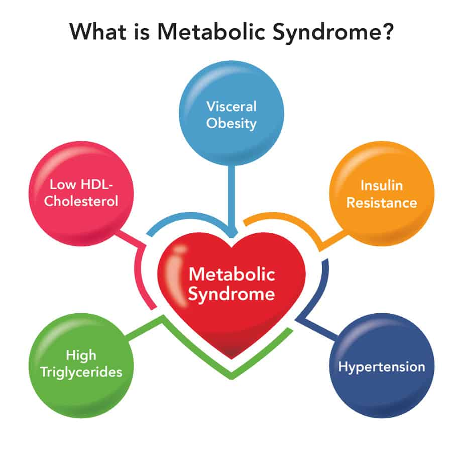
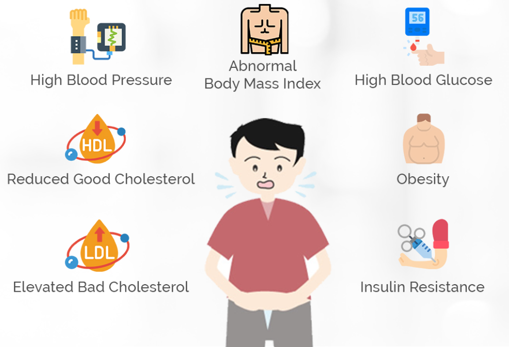

MetaPred - Metabolic Syndrome Index
This is a directory of all the parameters on the basis MetaPred can generate assessments for metabolic syndrome.
Metabolic Syndrome

Metabolic syndrome is a cluster of conditions that occur together, increasing your risk of heart disease, stroke, and diabetes. The conditions that make up metabolic syndrome include high blood pressure, high blood sugar levels, excess body fat around the waist, and abnormal cholesterol or triglyceride levels.
Symptoms
Symptoms of metabolic syndrome may include:
- High blood pressure: Blood pressure is considered high if it's consistently above 130/80 mm Hg.
- High blood sugar levels: Fasting blood glucose levels of 100 mg/dL or higher are considered high.
- Excess body fat around the waist: A waist circumference of more than 35 inches in women and 40 inches in men is considered a risk factor for metabolic syndrome.
- Abnormal cholesterol or triglyceride levels: Low levels of HDL cholesterol (good cholesterol) and high levels of triglycerides (a type of fat in the blood) are considered risk factors.
Signs
Some Signs may include:
- Fatigue or tiredness
- Difficulty sleeping
- Increased thirst and frequent urination
- Blurred vision
- Erectile dysfunction in men
- Polycystic ovary syndrome in women
Parameters MetaPred uses to predict Metabolic Syndrome

These are some of the common measurements and indicators that are used to diagnose or assess the risk of metabolic syndrome:
- Age: As people age, their risk of developing metabolic syndrome increases. This is partly because metabolic function naturally declines with age, and also because age is associated with other risk factors for metabolic syndrome, such as physical inactivity and weight gain.
- Gender: Men are more likely to develop metabolic syndrome than premenopausal women. This is thought to be because women's bodies produce estrogen, which helps protect against insulin resistance and other risk factors for metabolic syndrome. After menopause, women's risk of metabolic syndrome increases and becomes more similar to that of men.
- Waist Circumference: Waist circumference is a measure of abdominal obesity, which is a significant risk factor for metabolic syndrome. Fat stored in the abdominal area is metabolically active and can contribute to insulin resistance, high blood pressure, and other features of metabolic syndrome.
- Body Mass Index (BMI): BMI is a measure of body fat based on height and weight. A BMI of 30 or higher is considered obese and is a risk factor for metabolic syndrome. Obesity is associated with insulin resistance, inflammation, and other factors that contribute to metabolic syndrome.
- Uric Acid: Uric acid is a waste product that is normally excreted in the urine. High levels of uric acid in the blood are associated with insulin resistance, inflammation, and other features of metabolic syndrome. Uric acid levels can be elevated in people who consume a high-purine diet, have kidney disease, or have certain genetic predispositions.
- Blood Glucose: Blood glucose levels are a measure of the amount of sugar in the blood. Elevated fasting blood glucose levels (100 mg/dL or higher) are a risk factor for metabolic syndrome and type 2 diabetes. High blood glucose levels can lead to insulin resistance and other metabolic abnormalities.
- HDL Cholesterol: HDL cholesterol is often called "good" cholesterol because it helps remove excess cholesterol from the bloodstream. Low levels of HDL cholesterol, defined as less than 40 mg/dL in men and less than 50 mg/dL in women, are a risk factor for metabolic syndrome. Low HDL levels are associated with insulin resistance, inflammation, and other features of metabolic syndrome.
- Triglycerides: Triglycerides are a type of fat found in the bloodstream. High levels of triglycerides (150 mg/dL or higher) are a risk factor for metabolic syndrome. Triglycerides are associated with insulin resistance, inflammation, and other metabolic abnormalities. High triglyceride levels can be caused by a diet high in sugar and refined carbohydrates, physical inactivity, and other factors.
Predict Metabolic Syndrome
Predict